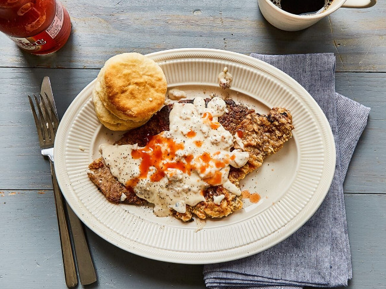

Отбивная с соусом из фарша
Порции: 4
Время подготовки: 10мин
Время приготовления: 20мин
Ингредиенты
1) 4 шт Отбивные Говядина или куриное филе
2) 1½ ч.л. Свежемолотый черный перец
3) ½ ч.л. Сушеный лук
4) ¼ ч.л. Кайенский перец
5) ⅛ ч.л. Сушеный орегано
6) ⅛ ч.л. Молотый кумин (зира)
7) 2 шт Яйцо
8) 1½ ч.л. Соль
9) 1 стакан Мука
10) 100 мл растительное масло
11) 1 стакан Пахта / или кефир, наполовину разведенный водой
12) 1 шт Купаты свиные / или 100-150 гр свиного фарша
13) 2 стакана Молоко
Для подачи Острый соус
Процесс приготовления
1. Разогреть духовку до 100°C.
2. Говядину или куриное филе нарезать кусками толщиной около сантиметра и
отбить молотком с зубчиками.
3. Яйца взбить.
4. Пахту вылить в миску. Если нет пахты, то можно вместо нее использовать
кефир, разведенный водой в пропорции 1:1. Добавить черный молотый перец, луковый порошок,
кайенский перец, орегано, кумин, влить взбитые яйца и всыпать 1 чайную ложку соли.
5. Все тщательно перемешать и выложить в получившийся маринад отбивные.
Также перемешать, чтобы маринад полностью покрыл отбивные.
6. На блюдо или на большую плоскую тарелку высыпать около 1 стакана муки,
оставив немного муки для загущения соуса.
7. В большой сковороде разогреть половину растительного масла.
8. Отбивные достать из маринада и обвалять в муке, стряхнув излишки.
9. Обжарить отбивные на сковороде до готовности, один раз перевернув.
Это займет примерно 7-10 минут на все.
10. Выложить готовые отбивные в форму и убрать в духовку, чтобы они оставались горячими.
11. Если вы используете купаты, то нужно удалить оболочку. Она не понадобится.
С фаршем все проще.
12. Очистить сковороду от остатков масла, влить свежее масло, разогреть его и выложить
свиной фарш или фарш от купатов.
13. Постоянно перемешивая и разбивая крупные куски фарша на мелкие, обжариваем их до готовности.
14. Обжаренный фарш посыпать мукой, перемешать, дать муке прогреться и слегка обжариться примерно 1 минуту.
15. Влить молоко, тщательно все перемешать и довести на среднем огне до кипения.
Снизить нагрев и часто помешивая, довести соус до загустения.
16. Добавить в соус соль и черный перец и снова перемешать.
17. При подаче выложить отбивные на тарелки и обильно полить соусом.
18. При желании сверху добавить острый соус.